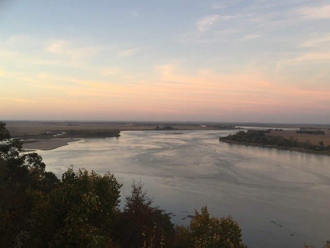

<!doctype html>
<html>
<head>
  <script src='spork.js'></script>
  <script>

var R=[];
var G=[];
var B=[];
var A=[];
  function setup(){

    size(theImage.width,theImage.height);
    drawImage(theImage,width/2,height/2,width,height);
    copyImageData(R,G,B,A);
    clear();
    color(0,0,0,0);
    loop();
    timestep(100);
    setupNoise(5);
    translate(-200,-200)
  }
  function draw(){
    save();
    var x,y,r;
    var cx,cy;
    a=random()*width;
    b=random()*height;
    x1=a+floor(random()*width);
    y1=b+floor(random()*height);
    x2=a-floor(random()*width);
    y2=b+floor(random()*height);
    x3=a+floor(random()*width);
    y3=b-floor(random()*height);
    x4=a-floor(random()*width);
    y4=b-floor(random()*height);
    quad(x1,y1,x2,y2,x3,y3,x4,y4,r);
    clip();
    cx=random()*width;
    cy=random()*height;
    r=floor(random()*360);
    drawImage(theImage,cx,cy,width,height,r);
    restore();
  }
  </script>
</head>
<body>
  <div id='spork'></div>
</body>
<button onclick='stoploop();'>Stop</button>
<button onclick='startloop();'>Start</button>
<button onclick='startover();'>Start Over</button>
<button onclick='canvasToNewImg();'>Make Image</button>
<br />

</html>
